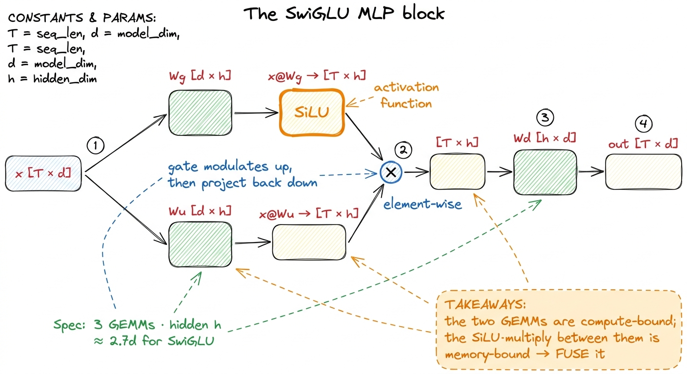
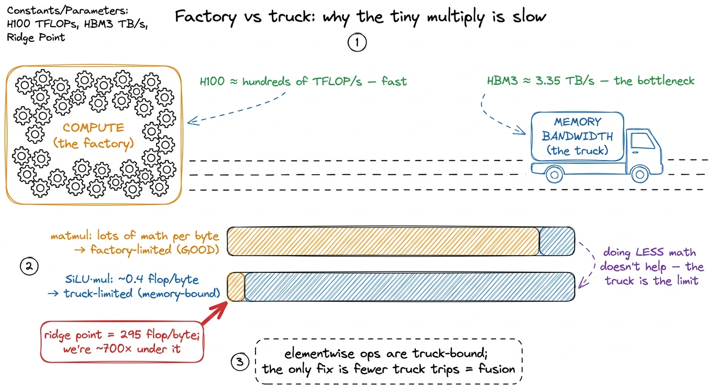
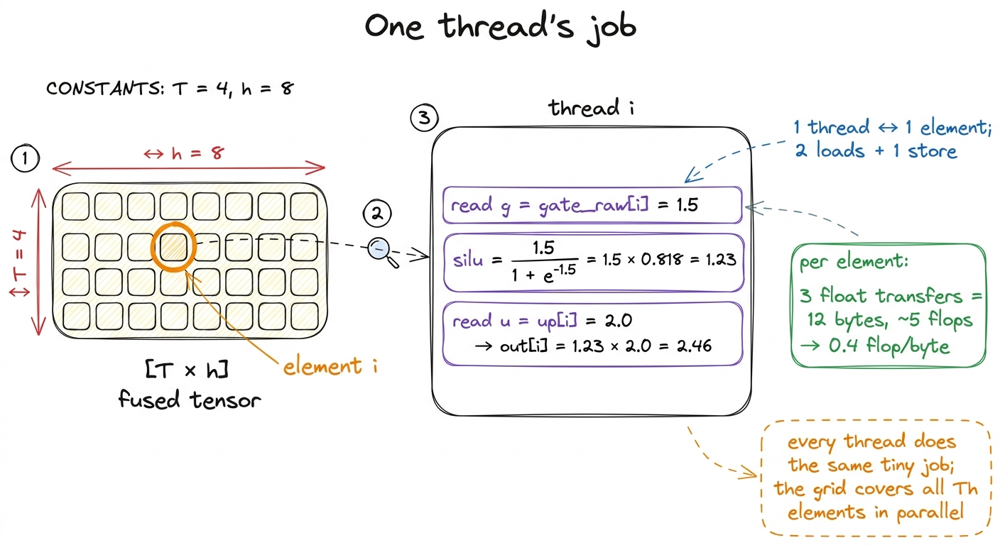

The SwiGLU kernel
Every transformer you have ever run spends a surprising fraction of its inference time not in attention, but in the boring block that comes after it: the MLP. And inside a modern MLP there is one small, specific kernel that shows up in Llama, in Mistral, in PaLM, in almost every recent model — the SwiGLU activation. It is three matmuls with a funny-shaped nonlinearity wedged in the middle, and it is exactly the kind of thing that is trivial to write correctly and easy to write slowly. That gap is the whole point of this article.
SwiGLU is also a favorite target on KernelBench and in Stanford's CS149 asst5, and for a good reason: it is small enough to hold in your head and rich enough that fusion actually matters. We are going to write the naive version, look at why it is memory-bound, fuse the cheap part, and measure the win.
What SwiGLU actually computes
Strip away the framework and the MLP is three weight matrices — a gate projection Wg, an up projection Wu, and a down projection Wd. For an input x of shape [T, d] (T tokens, model dimension d), with hidden dimension h:
gate = SiLU(x @ Wg) # [T, h]
up = x @ Wu # [T, h]
out = (gate * up) @ Wd # [T, d]The SiLU — also called swish — is SiLU(z) = z * sigmoid(z) = z / (1 + e^-z). The gate * up is a plain element-wise (Hadamard) product. So the whole block is: two matmuls into the hidden dimension, a nonlinearity, a multiply, and one matmul back down.1 The "GLU" in SwiGLU is Gated Linear Unit: the up-projection is modulated element-wise by a gate. Noam Shazeer's "GLU Variants Improve Transformer" is the one-page origin; the empirical win over plain GELU-MLP is small but consistent, which is why everyone shipped it.
Three matmuls, two of which we will hand straight to a good GEMM kernel because that is where the FLOPs are. The interesting part — the part that is ours to optimize — is the SiLU(...) * (...) in the middle. That is what this kernel is about.

figure rendering · The SwiGLU block. The matmuls dominate FLOPs; the activation-and-gateThe hypothesis: the middle is where we leak bytes
Here is the naive way, the way an unfused framework does it out of the box. Run the two GEMMs, materialize gate and up as full [T, h] tensors in HBM, launch a kernel that reads both back, applies SiLU, multiplies, and writes a [T, h] result, and then run the third GEMM on that.
Count the traffic on the middle step alone. gate and up are each T × h elements. To do the element-wise work we read both (2Th elements in) and write one (Th elements out): 3Th element-transfers to do about Th cheap flops — one sigmoid, a couple of multiplies per element. That is an arithmetic intensity of well under one flop per byte. From the three regimes we know exactly what that means: this step is hopelessly memory-bandwidth-bound, hundreds of times below the H100's ridge point of ~295 flops/byte. The SiLU transcendental is not the problem; the round-trip through HBM is.2 The GPU can compute a SiLU in a handful of SFU (special-function unit) cycles — sigmoid decomposes into an exp and a reciprocal, both hardware fast paths. The cost of this kernel is entirely the 2Th loads and Th store, not the arithmetic.
The fix is the single most important idea in inference-kernel engineering, and Horace He's Making Deep Learning Go Brrr hammers it: fusion. Do not write gate and up back to HBM as separate tensors and read them again. Fuse the SiLU and the multiply into a single kernel so that each element makes exactly one round trip. Better still, fuse the activation into the epilogue of the up-GEMM so the values never leave on-chip memory between "the matmul finished this tile" and "the activation is applied."
The fused element-wise kernel
Start with the standalone fused version — the one CS149 asst5 asks you to write — because it is the cleanest place to see the idea. We assume the two GEMMs already produced gate_raw = x @ Wg and up = x @ Wu in global memory, and we collapse the SiLU and the multiply into one pass:
// One thread per element of the [T, h] hidden tensor.
// Reads gate_raw and up ONCE each, writes fused ONCE.
__global__ void silu_mul_fused(int n,
const float* __restrict__ gate_raw,
const float* __restrict__ up,
float* __restrict__ out) {
const int i = blockIdx.x * blockDim.x + threadIdx.x;
if (i >= n) return;
const float g = gate_raw[i];
const float silu = g / (1.0f + __expf(-g)); // SiLU(g)
out[i] = silu * up[i]; // gate * up
}The naive unfused path would have been two element-wise kernels — a SiLU kernel, then a multiply kernel — each reading and writing the full tensor. The SiLU kernel reads gate and writes silu (2Th); the multiply reads silu, reads up, and writes the result (3Th) — 5Th transfers in all, across two launches. The fused kernel does it in one pass at 3Th. But the real win is not even here; it is one level up.
The genuinely fast version fuses the activation into the GEMM epilogue. A tiled GEMM computes an output tile in registers, accumulating across the k dimension in on-chip memory before writing the tile back to HBM. If we teach the up-GEMM to, in its epilogue, load the corresponding gate_raw tile, apply SiLU, multiply, and write the fused result — then gate and up never round-trip through HBM as separate tensors at all. The only thing that hits global memory is the final fused [T, h] tile, exactly once.
// Epilogue fusion (sketch): after the k-loop accumulates `acc`
// for this output tile of (x @ Wu), fold in the gate.
// gate_raw_tile lives in shared memory / registers already.
#pragma unroll
for (int t = 0; t < TILE_M * TILE_N / THREADS; ++t) {
float u = acc[t]; // x@Wu for this element
float g = gate_raw_tile[t]; // x@Wg, staged on-chip
float silu = g / (1.0f + __expf(-g));
C_tile[t] = silu * u; // one HBM write, fused
}
figure rendering · Unfused (A) writes every intermediate to HBM and reads it back. FusedProfiling it
Point Nsight Compute at the standalone fused kernel and the story is exactly what the regime analysis predicted. DRAM throughput sits near the top of the roofline — we are pulling a large fraction of the H100's 3.35 TB/s of HBM3 — while compute throughput (SM utilization on the math pipes) is in the low single-digit percent. The kernel is memory-bound, which is the correct place for an element-wise op to be: it means we are limited by the bytes we genuinely must move, not by waste.
The SASS confirms there is nothing left to shave in the body. The inner work compiles to a MUFU.RCP and an exponential path for the sigmoid, a couple of FMUL/FADD, and — critically — two LDG.E loads and one STG.E store per element.

figure rendering · The SASS is minimal — two loads and a store per element — and the roof3 __expf maps to the fast SFU exponential (MUFU.EX2 after a log2 rescale), not the slow accurate expf. For an activation this is exactly right — the error is a fraction of an ULP and invisible after the next matmul. If you see expf in your SASS you left ~10× of activation cost on the floor. There are no redundant loads. The kernel is doing the minimum memory traffic its algorithm allows, so the only way to reduce traffic further is to change the algorithm — which is precisely what epilogue fusion does by deleting two of those loads entirely.
So where does this land? The standalone fused kernel is bandwidth-saturated — it runs at essentially the speed of 3Th bytes through HBM, against the ~5Th the naive two-kernel path moved. On bytes alone that is about 1.7×; folding in the two saved kernel launches pushes the measured win higher still, and the smaller and more launch-dominated the problem, the bigger that gap gets.4 The exact multiple depends on T and h. Very small T (a single decode step, T = 1) becomes launch-overhead-bound instead — you are back in the overhead regime, and the fix is CUDA Graphs to amortize the launch, not more bandwidth tuning. Folding the activation into the GEMM epilogue does better still: it removes the fused kernel's own launch and its 2Th input reads, so in end-to-end MLP terms the entire SiLU-and-gate cost effectively disappears into the shadow of a matmul that had to write its output tile anyway.
Where the FLOPs really are
It is worth saying the quiet part out loud: this kernel is not where your inference time goes. The two hidden-projection GEMMs and the down-projection GEMM are the compute, and getting those to a high fraction of cuBLAS is the GEMM ladder's job — the same climb from a naive 1.3% of cuBLAS up through tiling and vectorization to 93.7%. The SwiGLU activation is the connective tissue between them.
But connective tissue is exactly where unfused frameworks bleed. A model with, say, 32 layers runs this block 32 times per forward pass; every unnecessary HBM round-trip you leave in the middle is paid on every layer, every token, every request. Fusing it is not a heroic optimization — it is table stakes, and it is the reason torch.compile and every serving stack (vLLM, TensorRT-LLM) ship a fused SwiGLU/SiLU-mul kernel rather than three eager ops.
The mental model to carry forward is the one this whole site keeps returning to: matmuls are compute-bound and belong on tensor cores; everything between the matmuls is memory-bound and belongs fused into the nearest matmul's epilogue. SwiGLU is the canonical, minimal, real-world instance of that rule. Once you can write this fused kernel and read its roofline in under a minute, you can do the same move — fuse the cheap element-wise thing into the expensive tensor-core thing — for RMSNorm, for bias-plus-GELU, for the residual add. It is the same trick every time, and it is most of what "kernel engineering for inference" actually means.